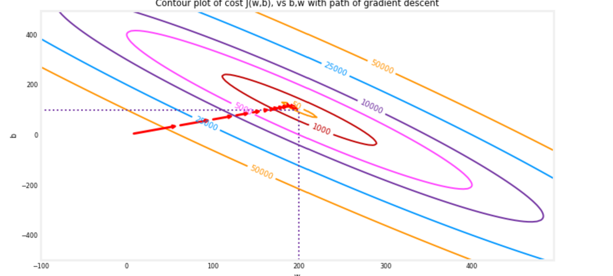
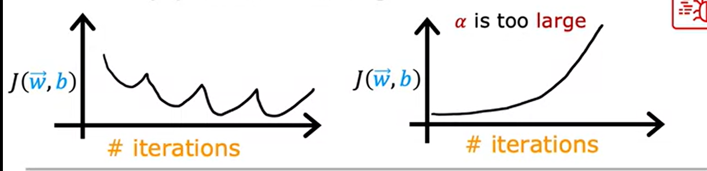

Supervised
Machine Learning: Regression and Classification
Week 1:Introduction to ML
Supervised VS Unsupervised
Learning
Supervised Learning
Input - Output prediction
Train your models with x and correct answers Y
Models take brand new X and predict Y
Regresion : predict X-Y mappings, where Y has
unlimited inifinte possible values
CLassification: predict only a small number of
outputs Y (categories/classes)
Unsupervised Learning
Find something interesting (structure) in unlabeled data. Do
not have an aim(e.g. clustering: (google news
cluster the related news togethe / grouping different customers);
Dimemsionality reduction ; Anomally
depression)
Regression model
1. Terminology
Training Set: Data set used to train the model
x : Feature / input variable
y : "target" variable(the correct answer)
(x,y) : single training variable
(\(x^{(i)}\), \(y^{(i)}\)) : the ith row of training
example
m : number of training examples
f : hypothesis / model
\(\hat{y}\) : prediction
\(f_{w,b}\)(x) = wx + b w, b:
coefficients / weight
import numpy as np import matplotlib.pyplot as plt plt.style.use('./deeplearning.mplstyle')
# x_train is the input variable (size in 1000 square feet) # y_train is the target (price in 1000s of dollars) x_train = np.array([1.0, 2.0]) y_train = np.array([300.0, 500.0]) print(f"x_train = {x_train}") print(f"y_train = {y_train}")
# m is the number of training examples print(f"x_train.shape: {x_train.shape}") m = x_train.shape[0] print(f"Number of training examples is: {m}") # m is the number of training examples m = len(x_train) print(f"Number of training examples is: {m}")
i = 0# Change this to 1 to see (x^1, y^1) x_i = x_train[i] y_i = y_train[i] print(f"(x^({i}), y^({i})) = ({x_i}, {y_i})")
# Plot the data points(marker : shape of the points, c : colour of points) plt.scatter(x_train, y_train, marker='x', c='r') # Set the title plt.title("Housing Prices") # Set the y-axis label plt.ylabel('Price (in 1000s of dollars)') # Set the x-axis label plt.xlabel('Size (1000 sqft)') plt.show()
defcompute_model_output(x, w, b): """ Computes the prediction of a linear model Args: x (ndarray (m,)): n-dimensional array of shape (m, ) w,b (scalar) : model parameters Returns f_wb (ndarray (m,)): model prediction """ m = x.shape[0] f_wb = np.zeros(m) # one dimensional array with n entries for i inrange(m): f_wb[i] = w * x[i] + b return f_wb
tmp_f_wb = compute_model_output(x_train, w, b,)
# Plot our model prediction plt.plot(x_train, tmp_f_wb, c='b',label='Our Prediction')
# Plot the data points plt.scatter(x_train, y_train, marker='x', c='r',label='Actual Values')
# Set the title plt.title("Housing Prices") # Set the y-axis label plt.ylabel('Price (in 1000s of dollars)') # Set the x-axis label plt.xlabel('Size (1000 sqft)') plt.legend() # what does this do ? plt.show()
defcompute_cost(x, y, w, b): """ Computes the cost function for linear regression. Args: x (ndarray (m,)): Data, m examples y (ndarray (m,)): target values w,b (scalar) : model parameters Returns total_cost (float): The cost of using w,b as the parameters for linear regression to fit the data points in x and y """ # number of training examples m = x.shape[0] cost_sum = 0 for i inrange(m): f_wb = w * x[i] + b cost = (f_wb - y[i]) ** 2 cost_sum = cost_sum + cost total_cost = (1 / (2 * m)) * cost_sum
defcompute_gradient(x, y, w, b): """ Computes the gradient for linear regression Args: x (ndarray (m,)): Data, m examples y (ndarray (m,)): target values w,b (scalar) : model parameters Returns dj_dw (scalar): The gradient of the cost w.r.t. the parameters w dj_db (scalar): The gradient of the cost w.r.t. the parameter b """ # Number of training examples m = x.shape[0] dj_dw = 0 dj_db = 0 for i inrange(m): f_wb = w * x[i] + b dj_dw_i = (f_wb - y[i]) * x[i] dj_db_i = f_wb - y[i] dj_db += dj_db_i dj_dw += dj_dw_i dj_dw = dj_dw / m dj_db = dj_db / m return dj_dw, dj_db
The 'quiver plot': The arrow sizes reflect the
magnitude of the gradient at that point. The direction and slope of the
arrow reflects the ratio of ∂𝐽(𝑤,𝑏)∂𝑤 and ∂𝐽(𝑤,𝑏)∂𝑏
defgradient_descent(x, y, w_in, b_in, alpha, num_iters, cost_function, gradient_function): """ Performs gradient descent to fit w,b. Updates w,b by taking num_iters gradient steps with learning rate alpha Args: x (ndarray (m,)) : Data, m examples y (ndarray (m,)) : target val ues w_in,b_in (scalar): initial values of model parameters alpha (float): Learning rate num_iters (int): number of iterations to run gradient descent cost_function: function to call to produce cost gradient_function: function to call to produce gradient Returns: w (scalar): Updated value of parameter after running gradient descent b (scalar): Updated value of parameter after running gradient descent J_history (List): History of cost values p_history (list): History of parameters [w,b] """ # An array to store cost J and w's at each iteration primarily for graphing later J_history = [] p_history = [] b = b_in w = w_in for i inrange(num_iters): # Calculate the gradient and update the parameters using gradient_function dj_dw, dj_db = gradient_function(x, y, w , b)
# Update Parameters using equation (3) above b = b - alpha * dj_db w = w - alpha * dj_dw
# Save cost J at each iteration if i<100000: # prevent resource exhaustion J_history.append( cost_function(x, y, w , b)) p_history.append([w,b]) # Print cost every at intervals 10 times or as many iterations if < 10 if i% math.ceil(num_iters/10) == 0: print(f"Iteration {i:4}: Cost {J_history[-1]:0.2e} ", f"dj_dw: {dj_dw: 0.3e}, dj_db: {dj_db: 0.3e} ", f"w: {w: 0.3e}, b:{b: 0.5e}") # [U]what is this return w, b, J_history, p_history #return w and J,w history for graphing

The path makes steady (monotonic) progress toward its goal.
initial steps are much larger than the steps near the goal.
Week 2:
Regression with multiple input variables
Multiple Linear Regression
Terminologies
\(x_{j}\) : the jth feature
n: number of features
\(\vec{x}^{(i)}\) : feature of the
ith example (e.g.: \(\vec{x}^{(i)}\) =
[1416 3 2 40])
\(x_{j}^{(i)}\) : value of the
feature j of the ith example. (e.g.: \(x_{3}^{(2)}\) = 2)
In linnear algebra, count from 1; in np, we count from 0
1
f = np.dot(w, x) + b
This vectorized implementation using parallel
hardware. It is more effecient than using for loop. ([U] Why?)
1 2 3 4 5
np.zeros(4,) : a = [0.0.0.0.], a shape = (4,), a data type = float64 np.array([5,4,3,2]): a = [5432], a shape = (4,), a data type = int64 np.random.random_sample(4): a = [0.978009190.134771950.042113480.20463884], a shape = (4,), a data type = float64 np.arange(4.): a = [0.1.2.3.], a shape = (4,), a data type = float64 # print(f"np.arange(4.): a = {a}, a shape = {a.shape}, a data type = {a.dtype}")
defcompute_cost(X, y, w, b): """ compute cost Args: X (ndarray (m,n)): Data, m examples with n features y (ndarray (m,)) : target values w (ndarray (n,)) : model parameters b (scalar) : model parameter Returns: cost (scalar): cost """
defcompute_gradient(X, y, w, b): """ Computes the gradient for linear regression Args: X (ndarray (m,n)): Data, m examples with n features y (ndarray (m,)) : target values w (ndarray (n,)) : model parameters b (scalar) : model parameter Returns: dj_dw (ndarray (n,)): The gradient of the cost w.r.t. the parameters w. dj_db (scalar): The gradient of the cost w.r.t. the parameter b. """
# do remember to simultaneously calculate the gradients defgradient_descent(X, y, w_in, b_in, cost_function, gradient_function, alpha, num_iters): """ Performs batch gradient descent to learn w and b. Updates w and b by taking num_iters gradient steps with learning rate alpha Args: X (ndarray (m,n)) : Data, m examples with n features y (ndarray (m,)) : target values w_in (ndarray (n,)) : initial model parameters b_in (scalar) : initial model parameter cost_function : function to compute cost gradient_function : function to compute the gradient alpha (float) : Learning rate num_iters (int) : number of iterations to run gradient descent Returns: w (ndarray (n,)) : Updated values of parameters b (scalar) : Updated value of parameter """ # An array to store cost J and w's at each iteration primarily for graphing later J_history = [] w = copy.deepcopy(w_in) #avoid modifying global w within function b = b_in for i inrange(num_iters):
# Calculate the gradient and update the parameters dj_db,dj_dw = gradient_function(X, y, w, b) ##None
# Update Parameters using w, b, alpha and gradient w = w - alpha * dj_dw ##None b = b - alpha * dj_db ##None # Save cost J at each iteration if i<100000: # prevent resource exhaustion J_history.append( cost_function(X, y, w, b))
# Print cost every at intervals 10 times or as many iterations if < 10 if i% math.ceil(num_iters / 10) == 0: print(f"Iteration {i:4d}: Cost {J_history[-1]:8.2f} ") return w, b, J_history #return final w,b and J history for graphing
# plot cost versus iteration fig, (ax1, ax2) = plt.subplots(1, 2, constrained_layout=True, figsize=(12, 4)) ax1.plot(J_hist) # calculated Cost history ax2.plot(100 + np.arange(len(J_hist[100:])), J_hist[100:]) ax1.set_title("Cost vs. iteration"); ax2.set_title("Cost vs. iteration (tail)") ax1.set_ylabel('Cost') ; ax2.set_ylabel('Cost') ax1.set_xlabel('iteration step') ; ax2.set_xlabel('iteration step') plt.show()
When the possible values of a feature is large, then the initial w
choose would be relatively small. A small change of w might have a huge
impact on the cost.
When the value of the features very widely, then it's very likely
that the gradient descent is inefficient (similar to the situation when
learning rage \(\alpha\) is too
large.)
To solve this, we do rescaling.
In rescaling, we aim for -1 <= \(x_j\) <= 1
Example
300<= \(x_1\) <= 2000 , 0
<= \(x_2\) <= 5
Dividing by maximum
rescale 0.15 <= \(x_1\) <= 1 ,
0 <= \(x_1\) <=5
Mean Normalization
rescale x to -1 <= x <= 1
\[x_i := \dfrac{x_i - \mu_i}{max - min}
\]
where \(\mu\) is the
average
Z-score Normalization
rescale x to have a mean 0 and standard deviation of 1([U] How?)
Let \(\epsilon\) be ..., if J(w,b)
decreases by <= \(\epsilon\) on one
iteration, declare convergence
Identifying the Problem

Learning Rate Too Large
Tips: if the Gradient Descent is not working, change \(\alpha\) to a very small number and check
if it is decreasing, else there's something wrong with the code
Values of \(\alpha\) to choose :
0.01 - 0.03 - 0.1 - 0.3 - 1 - 3 ...